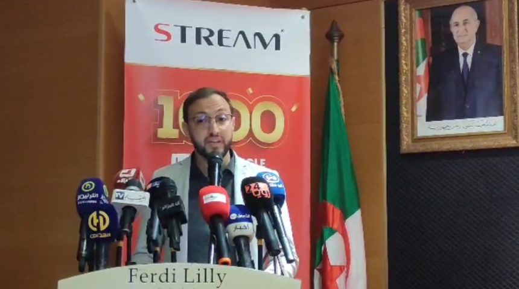

Evolving from Design to Development
With a strong background in graphic design and motion graphics, I have spent years crafting visual identities and digital content. My journey led me to become a Communication & Advertising Manager in a major TV manufacturing company, where I oversee branding, marketing strategies, and creative direction. Alongside this, my passion for web technologies grew, pushing me to master front-end and full-stack development with Next.js. Today, I blend design expertise with technical skills to build modern, engaging web applications.
Throughout my career, I’ve also developed strong public speaking and presentation skills, sharing ideas at conferences and company meetings. This experience has sharpened my ability to communicate clearly and effectively, whether in person or through digital platforms. These skills play a key role in my approach to both communication management and web development.